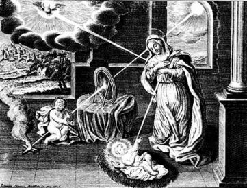

MARY MEDIATRIX OF ALL GRACES

"The Holy Spirit, Sanctifier and distributor of all graces, has chosen to act exclusively through the Immaculata. Therefore the Immaculata, as the instrument of the Holy Spirit, is the Mediatrix of All Graces won by Christ at Calvary."
Saint Maximilian KolbeThis picture is an illustration from the eight volume Mainz edition (1721-1742) of the works of Blessed Raymond Lull, compiled by Ivo Salzinger and published in facsimile by Minerva G.m.b.H Frankfurt/Main 1975
"And the angel answering, said to her: the Holy Ghost shall come upon thee, and the power of the most High shall overshadow thee. And therefore also the Holy which shall be born of thee shall be called the Son of God"
(Luke 1, 35)
.
In Liber de Ave Maria
Blessed Raymond Lull comments this verse:
Sixth Sermon: "The Holy Ghost shall come upon thee"
The Holy spirit, who comes upon Our Lady, is a divine person, and sanctifies Our Lady, who is also a person.
In the beginning of this sermon, let us pray to Our Lord Jesus Christ, to give me the grace to pronounce and to give you, ladies and gentlemen, the grace to hear, understand, and love the development of the theme of this sermon. So let us pray also to Our Lady, Saint Mary. And with love and reverence, let us say a Hail Mary in her honor.
I.
The holy Spirit, who came upon Our Lady, is naturally a good person and Our Lady is naturally a good person and the Son of God is naturally a good person. And thus the Son of God assumed his good human nature from Our Lady. And the Holy Spirit came upon Our Lady, as He supernaturally proportioned, (if we can apply the term "proportion" here) Our Lady as a person in a degree of goodness above her human nature, so that the Son of God might assume a supernaturally good nature from her. And the same can be said about Our Lady's greatness and about her corporeal duration, power and virtue. Who can ever comprehend such an excellent grace and the other graces poured out as the divine and human natures were proportionally joined together, is there really anyone who can describe this or report on it?
The Holy Spirit came upon Our Lady to inspire and excite Her understanding, remembering and love at the time of conception when she conceived of our salvation and the Holy Spirit set her in proportion, as it were, with God the Son's understanding, loving and remembering as He assumed his nature in human flesh from Our Lady. Who can ever comprehend such a conjunction and proportion between the divine and human natures, who indeed can write or speak about this?
As the Holy Spirit came upon Our Lady, her power of imagination was exalted and proportioned, as it were, to the divine nature taking her natural imagination to provide the Son of God with his natural human imagination. Who can ever comprehend this supernatural proportion, exalted and aggregated to the Son of God by the Holy Spirit, who indeed can write or speak about it?
Our Lady naturally has the powers of sight, hearing, smell, taste, touch and affatus (voice). All these powers of sense in general were exalted in excellence by the Holy Spirit and proportioned, as it were, to the person of the Son of God who assumed from Our Lady the natural senses of seeing, hearing, etc. Is there anyone who can realy comprehend, or write about, or speak about such a conjunction and proportion?
We have spoken of the proportion that must have arisen in Our Lady and her acts of sensing, imagining, remembering, understanding and loving by the operation of the Holy Spirit working supernaturally above human nature as It ordained the nature which the Son of God assumed, when He was incarnated in a natural body. In view of this natural excellence we can consider the excellence of the moral virtues, namely justice, prudence and others. And this excellence was produced by the Holy Spirit in Our Lady, so that her virtues be proportioned to conceive the Son of God, who assumed human flesh from her.
II.
There are ten general predicates in human nature namely: (1) substance, (2) quantity (3) quality, (4) relation, (5) action, (6) passion, (7) habit, (8) situation, (9) time (10) place. The Holy Spirit exalted and proportioned, as it were, all ten predicates in Our Lady so that the Son of God could receive a very elevated nature in receiving his human corporeal substance with the said accidents from her. Who can ever comprehend, or write about, or talk about such a lofty proportion and exaltation?
The Son of God is an infinite and eternal spiritual substance, free of any matter or accident. And He is a finite and newly formed substance in his human nature, which He received from Our Lady with all the said accidents. This is the kind of most lofty and miraculous work that the Holy Spirit operated as It overshadowed Our Lady and made the Son of God a man, produced and made from her. Had this work not been performed by the Holy Spirit, it could not be known as the supreme operation that the divine nature operates in human nature, nor would it be loved or remembered by angels and men; and it would be understood and remembered without being loved by the Son of God and likewise by the Holy spirit. And the privation of this operation would be a passion far greater than the totality of all created passion. Therefore the Holy Spirit wanted to overshadow Our Lady to perform the greatest operation that can ever proceed in a creature, through both natural and supernatural means.
Because the theme of this sermon says that the Holy Spirit overshadowed Our Lady, we can consider that the Holy Spirit exalted the excellence of Our Lady's nature in the way described above. On account of this, you, ladies and gentlemen, must be excellent and supernaturally raise aloft as much as you can, your sensing, imagining, remembering, understanding and loving, and acquire the virtues and pay reverence and honor to the Holy Spirit, to Our Lady and to her Son, the Man God.
Here ends this excerpt from Blessed Raymond's Book on the Hail Mary.
(Original Latin version published by Corpus Christianorum, Turnholt).
Back to Contents